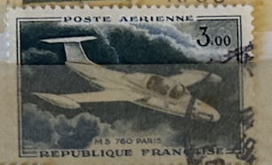
| SOURCE | TITLE| IMAGE MATCH | click to source page |
| eBay | Timbre Poste Aérienne PA39 Neuf** - Morane-Saulnier MS 760 - 1960 | eBay | 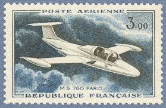 |
| eBay | Republique francaise w Europa | eBay | 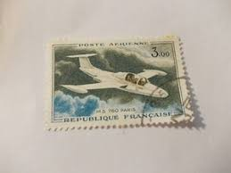 |
| eBay | French Aviation Aircrafts Flight Military Air Force Photo Postal Card | eBay | 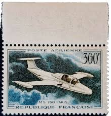 |
| eBay | L6452 FRANCE timbre Y&T N° PA 39 de 1960-64 " Morane Saulnier 760 " oblitéré | eBay | 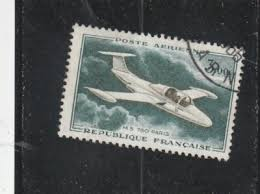 |
| eBay | France PA Plane Num Yvert 35 ** MNH Morane Saulnier | eBay | 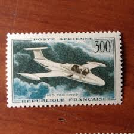 |
| eBay | Lot 2 Timbres France 1960/64 oblitérés Poste Aérienne YT PA 39 et 39a | eBay | 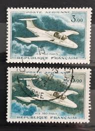 |
| eBay | Cockpit w Znaczki | eBay | 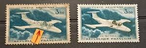 |
| eBay | Timbres aviation, espace avec 4 timbres | eBay | 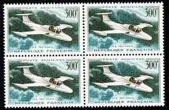 |
| Todocolección | nueva caledonia año 1965 ** aéreo yvert a81/a83 - Buy Antique stamps of France on todocoleccion | 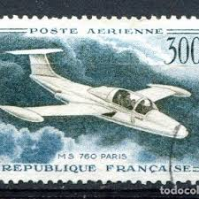 |
| My LOVE for Airmail, Airplanes, Aircraft and Aviation Stamps... ✈️🚁🚀🧑✈️ FRANCE 🇫🇷 - (1959 and 1960) "MORANE SAULNIER MS 760 PARIS PLANE" - The Morane-Saulnier MS.760 Paris is a French four-seat jet | 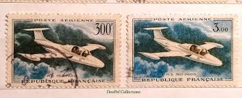 | |
| Osta.ee | Prantsusmaa 1959 lennuk 1m templiga (204494916) - Osta.ee | 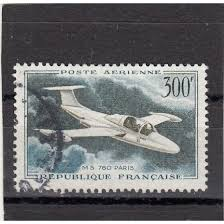 |
| Todocolección | republica francesa año 2003 yt 3608 - Buy Antique stamps of France on todocoleccion | 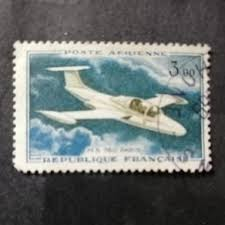 |
| Osta | Prantsusmaa, 1959 puhas (204225257) - Osta.ee | 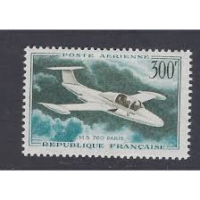 |
| Leboncoin | Timbre "ms 760" - Collection | 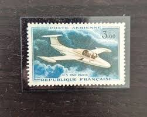 |
| Todocolección | francia, 1982, libertad, yvert 2181 - Compra venta en todocoleccion | 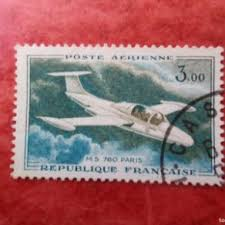 |
| Redbubble | Vintage France Ms 760 Aerienne Jet Plane Postage Stamp" Essential T-Shirt for Sale by red-amber65 | Redbubble | 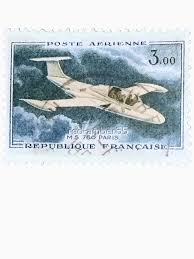 |
| Osta.ee | Prantsusmaa 1960. Reaktiivlennuk. Puhas. (227825242) - Osta.ee | 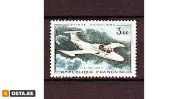 |
| kitantik | PEMBE SARDUNYA (Midilli'den Bergama'ya Uzanan Destansı Bir Muhacir Öyküsü) 2.EL, SEFA TAŞKIN - İkinci El Kitap - kitantik | #1702412000436 | 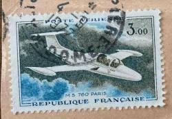 |
| Actualité Philatélique | Timbre / Lot : PA N° 39b "MS 760" (bleu unicolore) | À Collectionner | 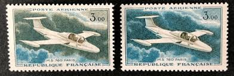 |
| Aukro | Francie ** Mi.1231 Letadlo Morane-Saulnier (Mi€ 5,-) | Aukro | 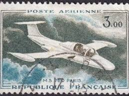 |
| Rakuten | Timbre Oblitere France Poste Aerienne pas cher - Meilleures offres sur le neuf et l'occasion | 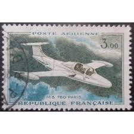 |
| Shutterstock | Morane saulnier : résultats (104) d'images libres de droits, de photos de stock et d'illustrations | Shutterstock | 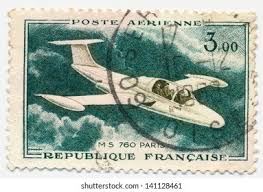 |
| eBay | L5601 FRANCE timbre Y&T N° PA 39 de 1960-64 " Morane saulnier 760" Oblitéré | eBay | 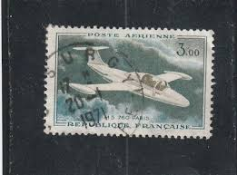 |
| serieasten.tv | Timbres Poste Aérienne France Timbre De Collection France Poste Aérienne N°63 Chez Timbres Poste Aérienne Neufs | 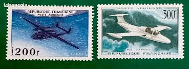 |
| Todocolección | francia. 1264 aniversario de la llamada del gen - Compra venta en todocoleccion | 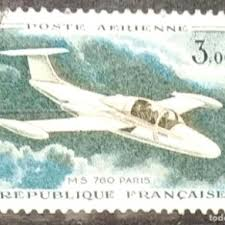 |
| Alamy | Morane saulnier ms 760 hi-res stock photography and images - Alamy | 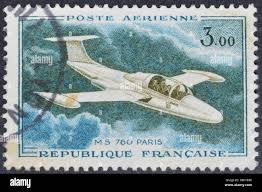 |
| trulyhats.net | Timbres à Poster Avions De Guerre Timbres Poste De Collection Timbres Poste Vert | 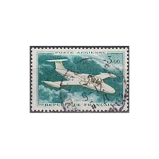 |
| Marché du timbre | dyhz.jpg | 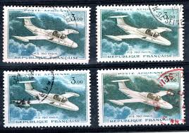 |
| docwong.net | En Ligne Lady Diana Timbres Poste En Blocs Feuillets Timbre Poste | 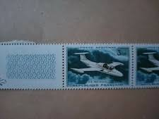 |
| esam.ir | تمبر کشور فرانسه | 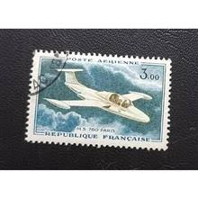 |
| Marcophilie | Timbre à date premier jour, grand format, non illustré | 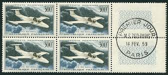 |
| Roumet Philatélie | 625.jpg | 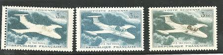 |
| esam.ir | تمبر پست هوایی فرانسه | 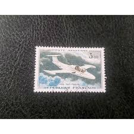 |
| eBay | Scott C75 - "USA" Et Jet - MNH 20C 1968 - Timbre Aérien Non Utilisé | eBay | 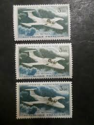 |
| eBay | France Variété Timbre N° 1304a (Fond Vert Très Pâle) + Normal / Obli / 1961 | eBay | 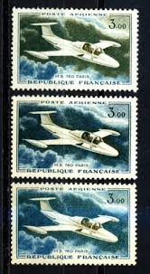 |
| kitantik | Fransa Pulu - France Stamp - Mektup Zarfından Kesilmiş / Postadan Geçmiş Pul Filateli - UÇAK TEMALI, 3,00 PARA - YABANCI PULLAR, NOSTALJİK DOĞUM GÜNÜ HEDİYESİ - Efemera - kitantik | #16802412011698 | 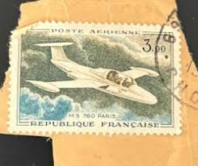 |
| kitantik | Fransa Pulu - France Stamp - Mektup Zarfından Kesilmiş / Postadan Geçmiş Pul Filateli - Damgalı - MS 760 PARIS, 3.00 PARA - YABANCI PULLAR - Efemera - kitantik | #16802410005443 | 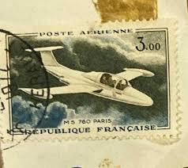 |
| Rakuten | Timbre : MS 760 PARIS,république française,poste aérienne,3,00.1959 | Rakuten | 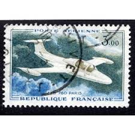 |
| kitantik | Macaristan Pulu - Magyar Stamp - Mektup Zarfından Kesilmiş / Postadan Geçmiş Pul Filateli - FÜZER KALESİ TEMALI Macaristan Pulu , 50 PARA - YABANCI PULLAR -NOSTALJİK DOĞUM GÜNÜ HEDİYESİ - Efemera - kitantik | #16802412011508 | 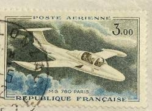 |
| Leboncoin | Timbre France POSTE ARIENNE entre 1930 A 1997 oblitérée pour 3,00 euro le lot de 23 timbre poste aérienne + 2 poste courante - Collection | 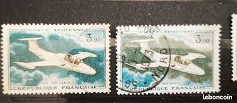 |
| kitantik | Fransa Pulu - France Stamp - Mektup Zarfından Kesilmiş / Postadan Geçmiş Pul Filateli - Damgalı - MS 760 PARIS, 3.00 PARA - YABANCI PULLAR - Efemera - kitantik | #16802411002953 | 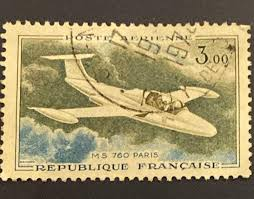 |
| Leboncoin | France Timbre Poste Aérienne - Collection | 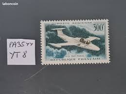 |
| Todocolección | francia marianne. perforado - perfin. usado - u - Acheter Timbres anciens de France sur todocoleccion | 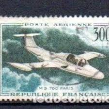 |
| Todocolección | dahomey colonia francesa yvert num. 21 usado - Compra venta en todocoleccion | 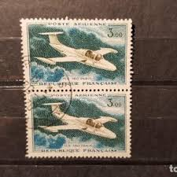 |
| eBay | 4669 - FRANCE - SCOTT# C34 - C35 - MLH - CAT $26.00 | eBay | 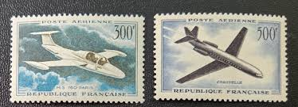 |
| Leboncoin | POSTE AERIENNE - N°39b - Timbre France neuf NSC - Collection | 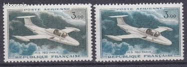 |
| Leboncoin | Timbre FRANCE PA 35 NON DENTELE - Collection | 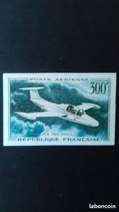 |
| Leboncoin | Timbre France PA n° 35, Neuf avec Charnière, Superbe - Collection | 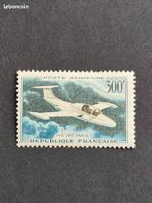 |
| eBay | Chile Aviation Postal Stamps for sale | eBay | 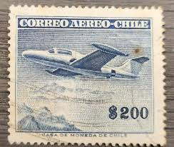 |
| eBay | FRANCE 1960 air high vals MLH | eBay | |
| X | An obscure bird with an Indian connection! The Fleuret was evaluated in 1954 by the @IAF_MCC to assess feasibility of an all-jet training system (i.e. start cadets on jets instead of props). | |
| Flight Manuals | MORANE-SAULNIER MS760 PARIS - Flight Manuals | |
| eBay | MS 760 Paris 1957 Planes Topps Card #20 (NM) | eBay | |
| Aviafrance | Morane-Saulnier MS-755 'Fleuret' - MS 755 Fleuret - Entrainement - Un siècle d'aviation française | |
| Secret Projects Forum | Argentinian Unbuilt Projects | Page 12 | Secret Projects Forum | |
| Descubra 26 ideias de XV 5A Vertifan e helicópteros | aviao, aeronave, arte sobre aviação e muito mais | ||
| kingairmagazine.com | Game Changer – Pratt & Whitney Canada's PT6A, Part 1 - King Air | |
| eBay | Lot of 7 1956 Topps JETS | eBay | |
| G's Plane Stuff | Original Beechcraft 760 Morane-Saulnier Jet Brochure, 12 page, 8.5 x 1 – G's Plane Stuff |